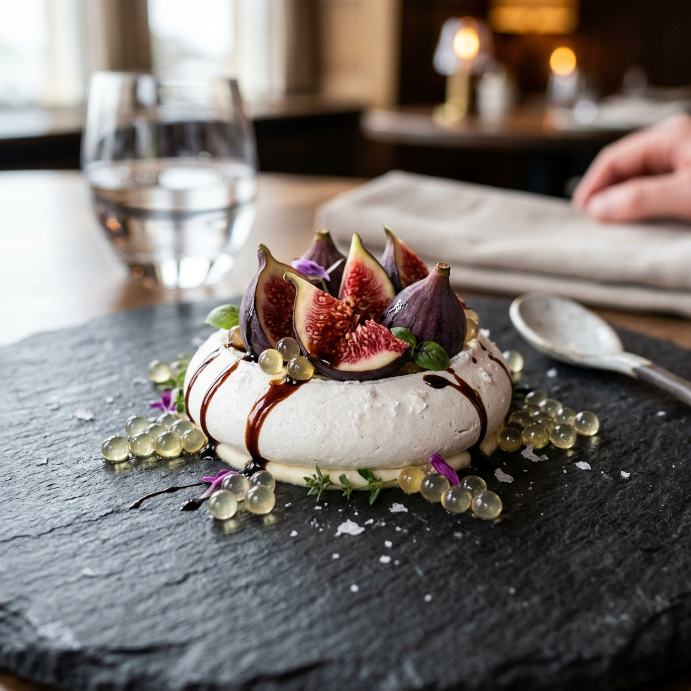
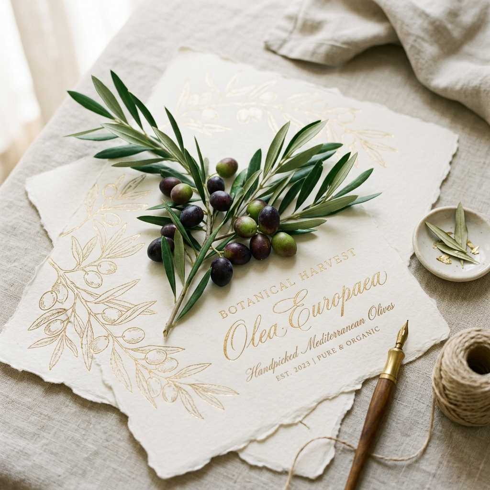
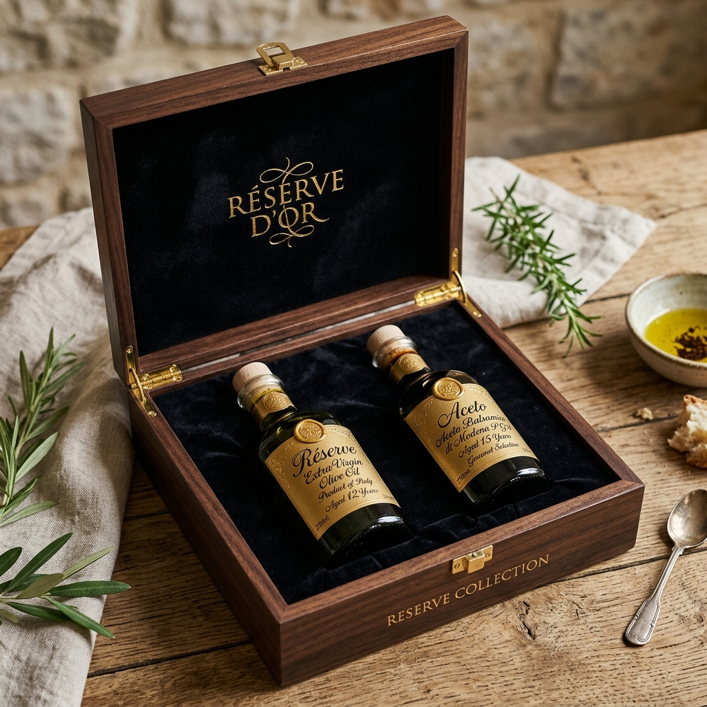

An immersive sensory estate of earth, wood, and time. We craft ultra-limited reserve extra virgin olive oils and traditional aged balsamics for those who perceive taste as art.
Our olive trees thrive across three distinct microclimates on our Mediterranean estate, each nurturing unique flavor profiles and chemical characteristics.
Battered by sea winds, these ancient terraced groves yield a bright, early-harvest Picual oil with unique maritime salinity and tomato leaf aromatics.
Sheltered from the elements, our valley Frantoio trees produce a delicate, smooth golden nectar carrying notes of sweet green almond and chamomile.
Clinging to fractured shale, these high-altitude Coratina trees struggle for water, concentrating immense polyphenol levels and delivering an intense, fiery finish.

We collaborate with Michelin-starred culinarians to push the boundaries of texture and temperature, revealing the sublime synergy of extra virgin olive oil and balsamic reserve.
A delicate white sea-salt meringue cradling fresh black mission figs, drizzled with our signature 18-year barrel-aged traditional balsamic syrup and encapsulated Picual olive oil micro-pearls.
Slow-smoked organic salmon draped over charcoal rye sourdough, finished with a heavy pour of our high-polyphenol Stone Ridge Coratina. The intense peppery finish cuts through the rich wood smoke.
A velvety house-churned sweet cream gelato infused with early-harvest Frantoio oil, topped with fresh-plucked wild mountain thyme and crystalline sea salt flakes.
Our estate preserves rare, protected olive and grape cultivars that hold the genetic lineage of centuries of Mediterranean agriculture.
A highly protected cultivar harvested exclusively from nine trees on our estate dating back to the 9th century. Yields a light, highly aromatic oil rich in oleocanthal.
A unique regional mutation of the traditional Picual clone, exhibiting double the normal level of leaf-green chlorophyll and producing a brilliant emerald oil with an apple-peeling nose.

Gain entry into our family's private sensory allocations. Club members receive quarterly micro-lot early harvest olive oils, single-wood experimental balsamics, and private invitations to estate blending workshops.
